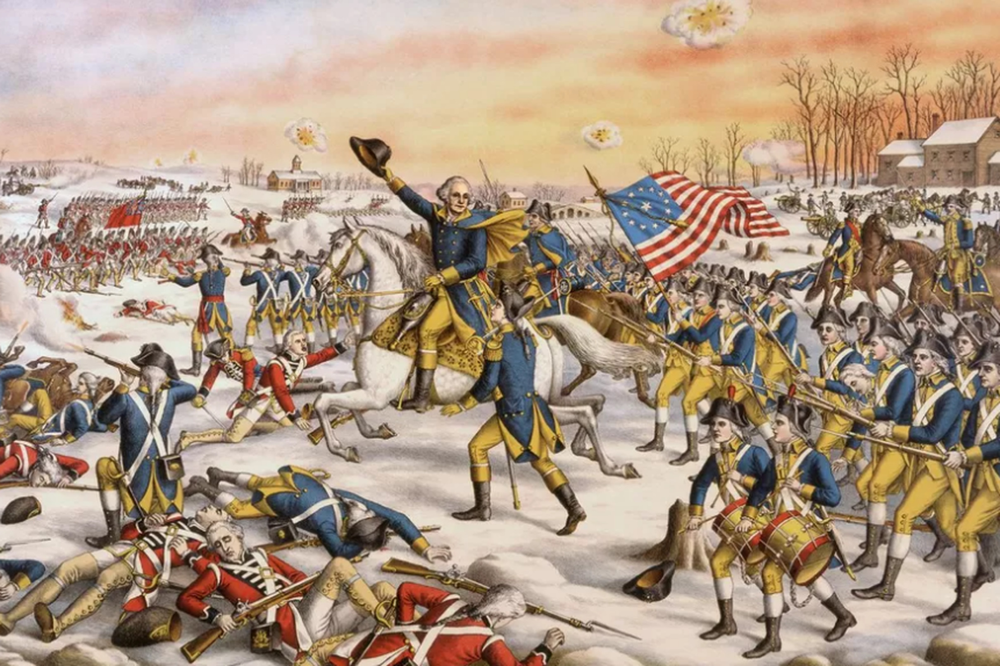
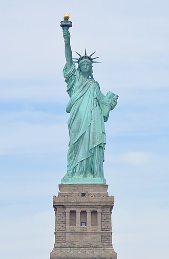
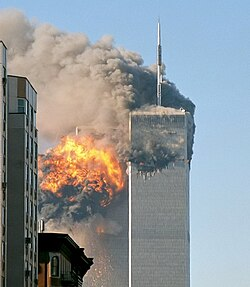

New York
New York City is the largest city of the United States. It's known for futuristic outlook, long history, lots of diverse landmarks, top-quality products and services, and a huge network of highways, railroads, and subways.
Population
Races

This city has about 8 million residents, making it the most populated city in the United States. According to this graph, at the moment of 2011, there is about 30% of white population, 20% - black, 25% - hispanic, 10% - asians, and 5% - multiracial. Compared to the values shown for the previous years, there was a significant increase of non-white population for the last 41 years. The most popular theory suggests that it's the continuation of the Great Migration, the event where Americans migrated from Southern states to Northern states in search for better living conditions.
Age & Gender

Next, the age and gender population. For the first time, this population pyramid may seem symmetrical and have an arrow-like shape, which means that this city keeps growing and has almost the same amount of male and female residents of all ages.
To some extent, that's true. But if you look at this graph deeper, you can see the paranormal spike in the ages from 25 to 34 years, and then a sudden decrease across the younger people. This is due to the recent increase in prices, and overpopulation, which could be seen by looking at some of the public places that are often overcrowded. You may also notice that there are much more females than males in the top rows with ages 75 years and older, but this feature is not unique for NYC - many other cities throughout the world have this too.
Geography
Map location


The city is located in the New York State, which is in the northeast of the United States. If we take a closer look at the map, we could see that the city is called the same way as the state it is in. This is why the official name of this city is New York City, or NYC. It is located on the southeast part of the state and is bordered by the Altantic Ocean. We may also notice that unlike most of the state, NYC is in the white area, meaning that it has almost no trees, which is reasonable for such a big city.
City map

New York City has 5 regions (or boroughs) - Bronx on the North, Queens on the East, Brooklyn on the South, Staten Island on the Southwest, and Manhattan in the center. Almost all of them are bordered between each other by the lakes, making boats useful for traveling throughout the city. Additionally, only 3 of these boroughs are bordered by the Atlantic Ocean, which is why there are little to no beaches on Manhattan and Bronx.
History
Early history
As well as the rest of the American continent, the land of the present-day New York City did have residents before the coming of the Europeans - Algonquians and Munsee-speaking Lenape. The first ones were a very populous and widespread but still didn't have a well-developed civilization, while the others lived in a relatively small territory.
The first time Europeans have visited this place was in 1524. It was claimed by France and named Nouvelle Angoulême, or simpler - New Angouleme. However, this colony didn't last long, so the next year, Spanish also tried to colonize it, but just like in French's case, it died quickly. Despite these failures, there was a moment when it was finally colonized and held for a while. In 1609, it was rediscovered and claimed by the English explorer Henry Hudson. Since he did it for the Dutch East Indian Company, one of the largest companies in history, 5 years later it was claimed by the Netherlands and named "New Netherland".
Dutch rule
10 years later, New Netherland became a full-fledged colony. The main business of the Dutch people here was the trade of animal fur. Despite that, the wanted to build and grow a new city. First of all, it was given to the Dutch West Indian Company in 1626 (Note: Netherlands had two Indian companies). The same year, they bought a Manhattan Island from a small Lenape band for 60 guilders (900$ today), which was considered bizarre by many historians. Then, they tried to attract settlers by creating a patroon system in 1628 that allowed people with at least 50 colonists brought with them to own land, have political autonomy, and trade fur. Unfortunately, it didn't pay off so much, so the city grew slowly. In response to this problem, they switched from fur trading to production of food, timber, tobacco, and usage of enslaved labor.
Even though in 1647, the New Netherland's population increased fourfold, and the laws were upgraded, the city wasn't well-protected. For that reason, the city was surrendered to the English troops in 1664. Fortunately, there were no casualties, and the Dutch residents were allowed to stay here.
English rule
Because in the next 3 years English were in a losing position, they were forced to give away Suriname, a small plantation colony in South America, to the Dutch, in order to keep New Amsterdam under themselves. Shortly after, they gave New Amsterdam a new name - New York, which it still has. Despite this Treaty of Breda that seemed to end the Anglo-Dutch rivalry, the Dutch launched another raid on New York. They succeeded, but soon, they were forced to give it back.
After Anglo-Dutch wars, Natives' population decrease, and several yellow fever epidemics, New York started developing as a trading port and as a center of slavery. The colony sticked to this path for about 70 years, until the legendary American Revolution.
American Revolution

This revolution started in the 13 colonies, when the George Grenville proposed Sugar Act in 1764 and British Parliament passed the Stamp Act in 1765. New York was one of them. In this city, the Sons of Liberty organization was founded. In fact, they were one of the first people who resisted the British crown.
When the Independence War started, New York became one of the main battlefields between the British army and the revolutionists. In modern-day Brooklyn, one of the current NYC's parts, there was the largest battle ever fought in this war - the Battle of Long Island. When it was captured by the British forces, they turned New York into their local military and political base. However, the life in the city didn't change significantly because for most of the war, the frontline was very far away. In 1783, 7 years after the start of the war, British forces were defeated and left New York, ending Independence War with the US victory.
After revolution
Since New York has recently surpassed Philadelphia as the largest American city and Washington D.C. was still under construction, it temporarily became the national capital. Thanks to the gradual abolition of slavery in the entire American continent that was passed in 1799, the NYC's population increased from 60,000 to over 3 million at the end of the 19th century. Along with that, there were lots of Germans and Irish. Despite that Washington D.C. became the new national capital, NYC retained the status of both national and international trading center.
American Civil War
During the Civil War, New York City was on Northerners' territories. However, the city wanted to stay neutral in this conflict and even tried to secede from US because it wanted to keep running its main business - cotton trade. Unfortunately, nothing changed and many of the New Yorkers were drafted, leading to the Draft Riots in 1863. As the result, many African Americans fled New York, and whites had established the job market dominance.
Late 19th century

In 1886, the Statue of Liberty was gifted by France, installed, and presented, becoming one of the most recognizable landmarks of the United States.
In 1998, New York City expanded by joining New York County (which included some parts of the modern-day Bronx), Brooklyn (it was initially a separate city), the County of Richmond, and the western part of Queens County.
20th century
In 1904, the NYC Subway was opened. Initially, it was like a lot of separate routes, but later, it was connected to a one big web, connecting all of the New York's boroughs together. Meanwhile, as the result of the Great Migration, many African Americans migrated to Northern cities, and despite their previous struggles, New York was their major destination. To prove their worth, they formed a movement today known as Harlem Renaissance, which involved demonstration of their culture and abilities to the other people. To some extent, they succeeded.
Thanks to the recent economic boom, New York started growing not only horizontally but also vertically, and became the most populous city in the world, overtaking London. In 1930s, it was the first city which metropolitan area's population surpassed 10 million people, becoming the first megacity in the world.
Shortly after World War II, the deadliest war ever fought, the United Nations was created. Since US became the most influential in global economics and politics, the UN headquarters was built in this city, boosting its geopolitical influence. Along with economic and political power alone, US also gained a huge influence in the art world. This way, Paris - the capital of France - was displaced by New York as the center of the world art.
In 1969, there were massive violent protests known as Stonewall Riots, which is considered as the start of the LGBTQ+ movement. But what was much worse is that in the rest of the 20th century, the city experienced the increasing job losses and crime rate. This way, many residents faced budget losses. They did the only thing possible: asked for financial aid from the government. Unfortunately, Gerald Ford (the US president at that time) refused to do so. Even though the New York State government tried to help people and partially succeeded, the New York's crime rate kept growing.
Nowadays

At the start of the 21st century, NYC population (excluding metropolitan area) passed 8 million mark, indicating that the city kept actively developing. Everybody was happy, but the bad things occured very soon.
In September 11, 2001, two of the four hijacked airplanes rammed the Twin Towers, where the World Trade Center was located. As a result, hundreds of thousands of people lost their jobs, many small businesses were destroyed, and the city's GDP dropped by about $30 billion in just 1 year. Fortunately, the federal government provided financial aid to the city's government. This way, the World Trade Center was rebuilt, and owners of small businesses that were affected by these attacks received loans.
10 years later, the Occupy Movement was formed. They aimed to advance social and economic justice because many of the movement's participants argued that the world is controlled by large corporations, financial systems, and many other rich people. Even though this movement didn't last long, some of those they protested against turned their businesses to a more humane way.
In October 2012, there was a Hurricane Sandy. The consequences were devastating: at least 43 deaths, economic losses measured in $19 billion, the local subway was flooded and closed for a few days, as well as NYSE (New York Stock Exchange).
In 2020, when COVID-19 started, New York City became one of the epicenters of this pandemic. Within the next 3 years, about 80,000 people died from this virus.
Climate
Climate zone

Unlike the rest of the New York State, New York City is in the humid subtropical climate zone, meaning that the city has humid summers and moderately cold winters. It's due to, once again, large population, residents periodically making surface modifications, and most importantly, being close to the Atlantic Ocean.
Temperature

The average annual temperature of New York City is 57°F (14°C). Throughout the year, it usually varies from 30°F (-1°C) to 77°F (25°C), which is why snowfalls there are rare and it's not a good choice for those who enjoys going to the beach frequently.
Weather
In most cases, NYC has a sunny weather. However, since its climate is relatively moderate, it often has fogs, rainfalls, and even thunderstorms.
The average New York's precipitation per year is 49.5 inches (1,257 mm), with June being the most rainy (4.54 inches or 115 mm), and February being the least rainy (3.19 inches or 81 mm). Thunderstorms there occur each 2 weeks in average, with 4 lightning strikes per square mile annually.
Wages & Prices
Minimum wage
Currently, in 2026, the legal minimum wage in New York State for all employees is 17$/hour, which is one of the highest wages in the United States. If we look at the table below, then we will see that the minimum wage keeps growing since 1960, indicating the city's economic growth. However, we can also see that through 2010s, the minimum wage more than than doubled, while for the last 6 years, the minimum wage grew by just 13%.
| Year | Hourly pay | Change |
|---|---|---|
| 1960 | 1.00$ | - |
| 1970 | 1.85$ | +85% |
| 1980 | 3.10$ | +68% |
| 1990 | 3.80$ | +23% |
| 2000 | 5.15$ | +36% |
| 2010 | 7.25$ | +41% |
| 2020 | 15.00$ | +107% |
| 2026 | 17.00$ | +13% |
Rent

Since New York is very large and fast-growing, the rent stays as one of the most annoying payments for many residents. If we look at the graph and compare it to the minimum wages, then at the moment of 2024, we will need to work for about 45 hours in Queens, 55 in Brooklyn, and 70 in Manhattan each week in order to pay for an apartment alone, which is much more than the normal work schedule - 40 hours per week.
Food
Just like rent, food prices are very high due to a lot of residents, and the farms struggling with growing crops due to the climate being temperate and frequent struggles with delivering their food products to the grocery stores and restaurants. For example, a half-gallon bottle of milk costs about 8$. If we compare it to the local wages and deduct the most likely spendings, like renting a 1-room apartment for 2000$ per month, then we'll have too few money left for food.
Transportation
Highways

Since NYC has a large area, it, correspondingly, has a huge network of highways. However, because it's also densely populated, the road situation is often tense, often leading to traffic jams or accidents. This is why moving throughout the city may be hard for those who have small driving experience or often drink alcohol.
Bus routes

Due to the New York being large, buses have an enough amount of regular customers, but because buses are also ground vehicles, just like cars, they can also get stuck in road issues like traffic jams, especially in densely populated regions like Manhattan, which explains why so many people prefer to walk or ride a bike instead.
However, we may have exceptions to the rules. One of them - Queens region that is in the East of NYC. This region has much more area and less people, which explains why there are so many bus routes spreaded out throughout the region.
Subways

Unlike the highways and buses alike, subways are the most favorite type of transportation because it's fast, cheap, and most importantly, least likely to get in an accident. However, some regions are far away from the closest subway station, while subways' trains themselves are often overcrowded, which is the reason why some people still prefer to move on the surface.